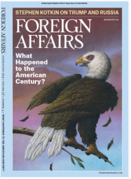

收录于合集
作品简介
【作者】
Alina Polyakova是布鲁金斯学会外交政策项目成员，也是约翰·霍普金斯大学高级国际事务学院欧洲研究的副教授。
Benjamin Haddad是美国大西洋理事会未来欧洲计划的主管。
【编译】 刘金晶（国政学人编译员，外交学院国际关系研究所）
【校对】 李博轩
【审核】 柯孜凝
【排版】 贺奕
【来源】 Alina Polyakova, Benjamin Haddad, “ Europe Alone：What Comes after the Transatlantic Alliance,” Foreign Affairs , Vol.98, Issue4, 2019, pp.109-120.
期刊介绍

由美国深具影响力的智库外交关系委员会（Council on Foreign Affairs）出版的双月刊，撰稿者多为美国深具影响力的学者和政府决策官员，从中可窥探出美国外交政策的最新走向。
孤身奋战的欧洲 ：跨大西洋联盟将何去何从
Europe Alone：What Comes after the Transatlantic Alliance
内容提要
近年来，跨大西洋联盟已不是二战刚结束时的铁板一块。美国与欧洲在发展的过程中，其利益点在一些层面围绕共识交织缠绕，但在另一些具体的事务上，双方步调并不一致。由此二者在外交事务显露的表层——政策立场方向上，出现分歧。 本文从美欧自二战结束以来的历史渊源说起，认为跨大西洋联盟的分歧由来已久且早有端倪，并不始于特朗普当选之时，也不会终于其卸任之际。这一分歧实则与欧洲长期以来的文化自满相关，也是当下欧洲权力政治的需要。沉溺于过去美欧情如手足的关系无益于当下欧洲的发展，欧洲需要认识到，当下的挑战正是一个不可多得的机遇，它反促欧洲走自己的道路，重塑一个更为平等的跨大西洋联盟。
**
**
“ 美国会回来。”美国前副总统拜登（Joe Biden）在2019年慕尼黑安全会议上的一席话为他赢得满堂喝彩。欧洲的热烈回应反映出其对美国的依赖。这一讲话似乎表明，欧洲只需静待，保持耐心。但事实上，这只是掩耳盗铃，美欧之间的裂痕并不会因特朗普上任而起，也不会以其卸任而告终。美欧双方亟待完成的是对当前美欧关系的坦诚认识，这是建设一个更为成熟、更具前瞻性的跨大西洋伙伴关系的第一步。
对欧洲充满敌意的白宫和美欧之间利益的分离都不是造成跨大西洋伙伴关系恶化的原因，最本质的原因是美欧之间的权力不对称。欧洲对此早有认知，并乐意将自身的安全置于美国的保护伞之下。特朗普总统的欧洲政策改变了这一局面：他认为欧洲一直在搭乘美国安全的便车，现在欧洲需要下车了。下车后的欧洲面临着弱肉强食的安全危机，因此，其提出了战略自主（strategic autonomy）愿景。但目前，欧洲军队只存在于白皮书中，欧洲若发展自己的武装力量以保障安全，便意味着置自身于美国的对立面。美国一贯的立场基于这样的前提：欧洲只有在美国与北约的领导下，才能发展适当的军事力量。美国需要做出选择:是维持一个脆弱、分裂并依赖美国的欧洲大陆，还是与一个更自主、更强大，但有时会与美国政策相背离的伙伴打交道。欧洲也面临未来的选择，毕竟它不能在安全仍由美国保障的情况下谋求全球的领导地位。 本文认为从长远来看，独立自主的欧洲比孱弱无能的欧洲更符合美国的利益，在坚持跨大西洋伙伴关系的基石 ——自由民主价值观下，美欧双方需要更多致力于增强自主性建设，并接受其可能的后果。
文章导读
一、 非一日之寒
利益是最好的盟友，但即使在利益最为坚固的冷战时期，美欧之间的裂痕早已显现。英国和法国分别在20世纪50、60年代罔顾美国的反对，研发出核打击能力；西德在70年代寻求与东德缓和关系，带来西方联盟即将破裂的恐惧；2001年，小布什总统退出了1997年签订的《京都议定书》；在美国发动的伊拉克战争中，法德两国拒绝加入布什总统的“意愿联盟”（the coalition of the willing）；奥巴马政府推出“重返亚太”战略，以亚太地区为其核心，欧洲战略中心地位被迫降级，继续在美欧关系的伤口上撒了一把盐。以史类比，当前美欧双方对伊朗核问题的不同态度，也与1956年苏伊士运河危机期间的美国与英法之间的分歧、2003年伊拉克战争时美国与欧洲的分离异曲同工。但欧洲对早先的分歧视而不见，特朗普政府似乎成了这一关系恶化的替罪羔羊。“当前，责怪特朗普破坏了美欧联盟，成了欧洲人的共识。”
其实，欧洲领导人早早就应反思历史，制定一项将美国更好地纳入欧洲安全的发展战略。但欧洲并无所作为，他们维持其孱弱的现状，抱怨与美国关系的破裂。 本文认为， 美欧双方都应该认识到当前双方的关系必须得到改变，而且应该共同塑造一个更为平等的关系，缓解不可调和的矛盾 。
二、 自满的终结
当代研究中，把民粹主义视为意识形态已司空见惯，然而，究竟是什么使民粹主义成为意识形态却还不清楚。一些学者把它当作一种理想的信仰体系，用以区分理念和客观世界。而从话语理论的角度来看，客观现实本身就是一种意识形态的东西，因为它总是依赖话语这一中介。拉克劳在拉康主义理论的基础上，用“缺失”的概念（notion of lack）来强调，身份本质上是不完整的，这激发了人们对完整性的渴望，并将渴望导向了一个经验客体，承诺重塑整体性来应对“危机”。这是通过制造幻想实现的，幻想在话语中描绘了一种行动路径，满足主体对整体性、确定性和安全感的渴望。 民粹主义话语将这种渴望引导到 “ 人民 ” 这一客体上，有望重新建立社会客观性和社会的统一与和谐。
欧洲的困境显而易见：缺乏对共同防御的前瞻性，却处于领土边界处的不稳定状况的压力之中。 俄罗斯插手叙利亚战争，出兵克里米亚；中国在美欧之间打入楔子； 这均 预 示着欧洲的分裂，并处于机会主义强国的围困之中。本文认为，解决这一问题的最谨慎的方法是欧洲需要收起其文化自满的洋洋得意，而尽力争夺其自主性。也就是说，欧洲需要发展自我防御能力，扩大欧洲共同利益。 因此，欧盟于2016年提出了《欧盟外交与安全政策全球战略》，欧洲国家领导人们也一再强调这一战略，可是，实施起来却并非如想象中如意。
一方面，欧洲需要维护其周边邻国的稳定与安全， 但欧洲国家缺乏相应的军事能力与政治意愿。 德国总理默克尔在慕尼黑安全会议上表示，“美国撤离叙利亚战争将导致叙利亚出现权力真空，但德国不愿在接替美国在叙利亚的领土上作战。”法国是欧洲安全战略的坚定支持者，但是受制于其有限的军事能力与强大的国内反对声音，无法独立达成目标。
另一方面，欧洲需要克服内部的外交政策差异。欧洲各个国家的雄心壮志与作为一个整体的欧洲的利益是相互冲突的。 欧洲将中国视为“制度性对手”（systemic rival），并引入了一项针对中国的监测系统（screening system），但这一系统具体在国家层面上运行时缺乏相应的措施，例如其无法阻止意大利加入中国“一带一路”倡议、英国允许华为建立5G基站等。在能源政策上，欧洲各国也存在分歧，在俄罗斯“北溪2号”能源管道的建设和开发问题上尤为明显。
尽管面对众多的国内外交政策差异，欧盟层面的外交政策仍然拥有大量的共识。首先，欧盟会继续制裁俄罗斯。针对俄罗斯干预欧洲选举，欧盟正致力于情报共享，揭露俄罗斯的虚假信息。其次，欧洲在美国退出伊核协议的情况下表态将维护伊核协议。再次，欧洲也正增长其军费开支，以应对当前不断显露的安全问题。最后，欧盟层面也在加紧军事合作，建立“永久结构性合作”(PESCO)防务协定和欧洲防务基金等。但是，防务体系一体化的推进并不是一帆风顺的。国家在军事战略的分歧依旧难以调和，兴起的欧洲军工业必然也会与美国军工业相互竞争。更大的问题是，欧洲自主的军事能力与北约不兼容。欧洲领导人需要明确，其目的是增强欧洲联合军事能力，而不是与北约展开竞争。
三、 权力政治
在防务体系上，欧洲应该继续投资北约，确立以安全利益为上的外交政策。但欧洲自主性并不单指防务与安全领域，在其具有优势的领域内，欧洲应当扩大其原有优势，如经济体量、统一的货币政策、政治实力与软实力。但归根结底，欧洲最需要的是理智地调和权力。这绝非易事，因为在美国的保护伞下，欧洲几代决策者都认为简单的技术性合作可以取代国际关系的权力逻辑。欧盟自认为是一种规范性力量（normative power），可以通过操纵巨大的单一市场对外输出欧盟的规范，从而塑造全球规范。如欧盟提出一般数据保护法（General Data Protection Regulation）为美国所接受。但欧盟低估了硬实力在支撑软实力方面的作用。欧盟当前没有认识到其安全的紧迫性更多的来自于地缘政治危机而非其他，这一点从乌克兰危机中可见一斑。欧盟地缘政治权力观还应包含对其巨大的单一市场在维护欧洲自主性方面巨大作用的认知。欧盟委员会可利用其规范性的制度机制，通过立法施行更为现实的防务政策，以避免欧洲成为各大国竞争的角力场。
四、 无需沉溺过去
于美国而言，一个更为独立自主的欧洲将意味着更多的分歧与问题。当前，欧洲在伊朗核问题上尽力回避美国对伊制裁。欧洲也可以尽力使欧元作为储备货币，减少对美元以及美国财政体系的依赖。一个日渐加大自身防务费用承担比例的欧洲是不会在政治上依旧保持对美的被动地位的。
但好消息是，欧洲依旧在尽其所能地营造新型的跨大西洋伙伴关系，这将减轻美国的不满，弥补欧洲当前不足。 为了确保这一新型关系的形成，美欧双方都应该下调对双方的期待。欧洲无法继续成为美国利益的核心区域，其应当聚焦于保障自身生存，而美国应在安全领域尽力协助欧洲。我们不应为跨大西洋伙伴关系的现状惋惜，也不必过度缅怀过去的同盟关系。如果当前的欧洲能够认识到自身的问题，从而走出一条自己的道路，那么重新塑造的新型跨大西洋伙伴关系将更为平等，于欧洲有益。 美欧双方在塑造国际体系的制度和规范上仍旧存有诸多利益共同点，如共同发展人工智能，应对与中国的贸易危机，应对当前气候变化等。不可避免地，新型的跨大西洋伙伴关系将不复从前，也将充斥更多的不信任。但相较于各国分离、各走各路而言，这一关系已经足够紧密。
_ ** _ ** _ ** _ 本文由国政学人独家编译推荐**__
扫下方二维码查看往期精彩
【新刊速递】第01期 | Review of International Studies Vol.45, No.4, 2019
【新刊速递】第02期 | International Relations Vol.33, No.3, 2019
【新刊速递】第03期 | International Organization Vol.73, No.3, 2019
分类导览 1
分类导览 2

点“在看”给我一朵小黄花